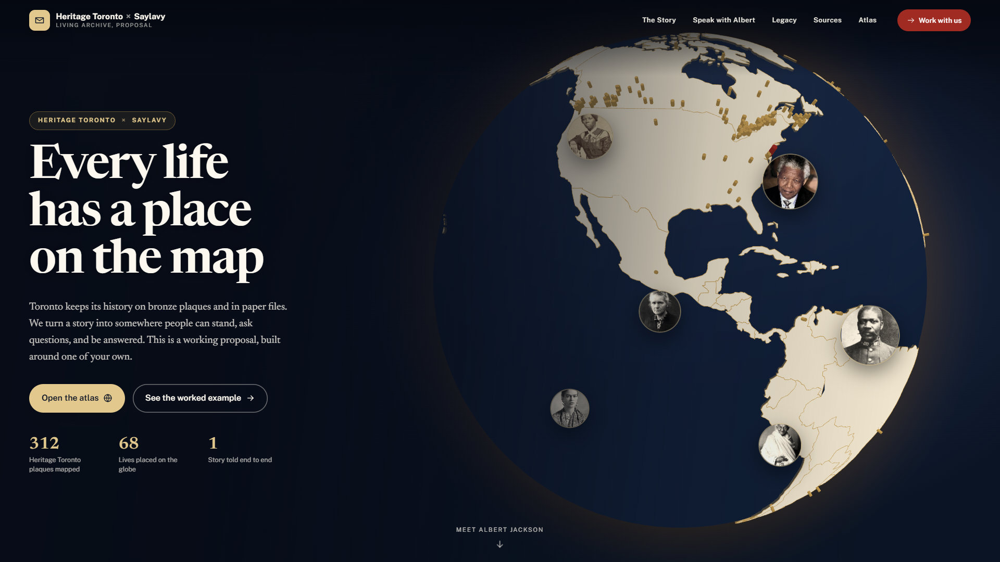

Heritage Toronto × Saylavy — 10s intro
Heritage Toronto × Saylavy
Every
life
has
a
place
on
the
map
A living archive for the city's plaques.

The living atlas
0
lives across Canada
0
Heritage Toronto plaques
0
that answer when asked
Heritage Toronto
×
Saylavy
saylavy.info
Living archive